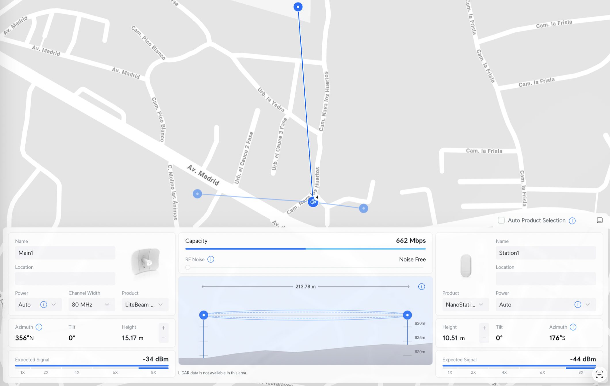
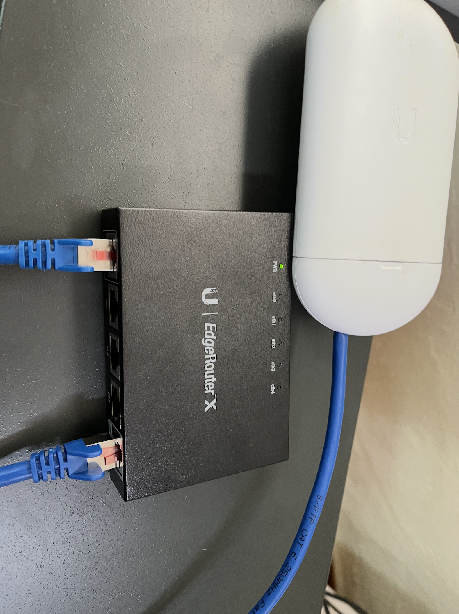
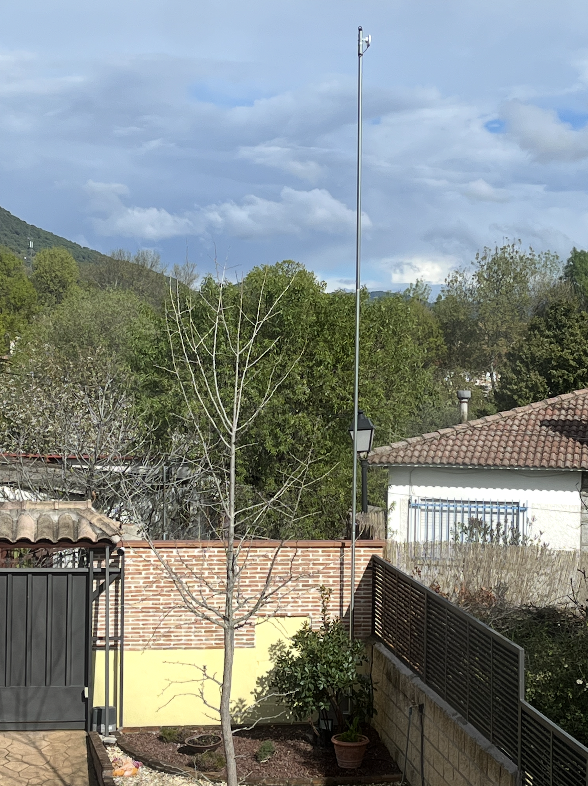
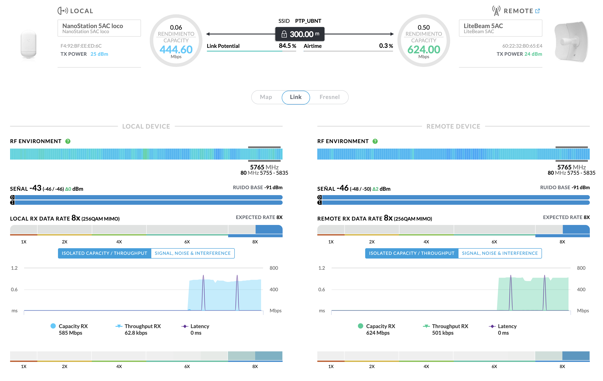
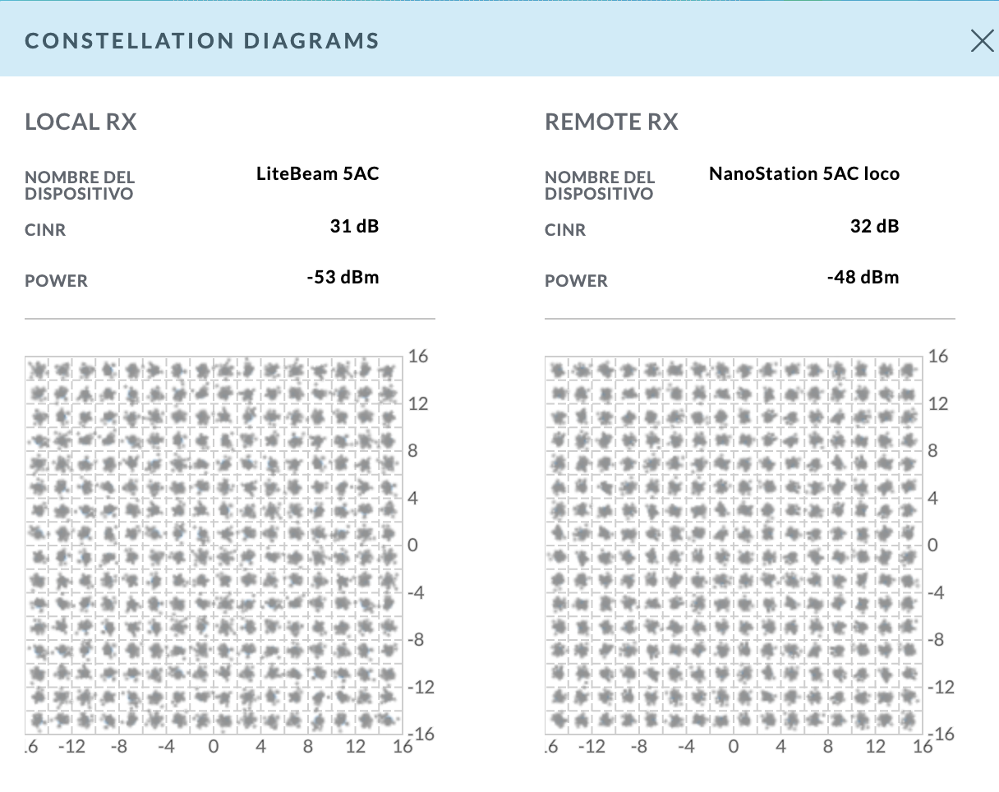
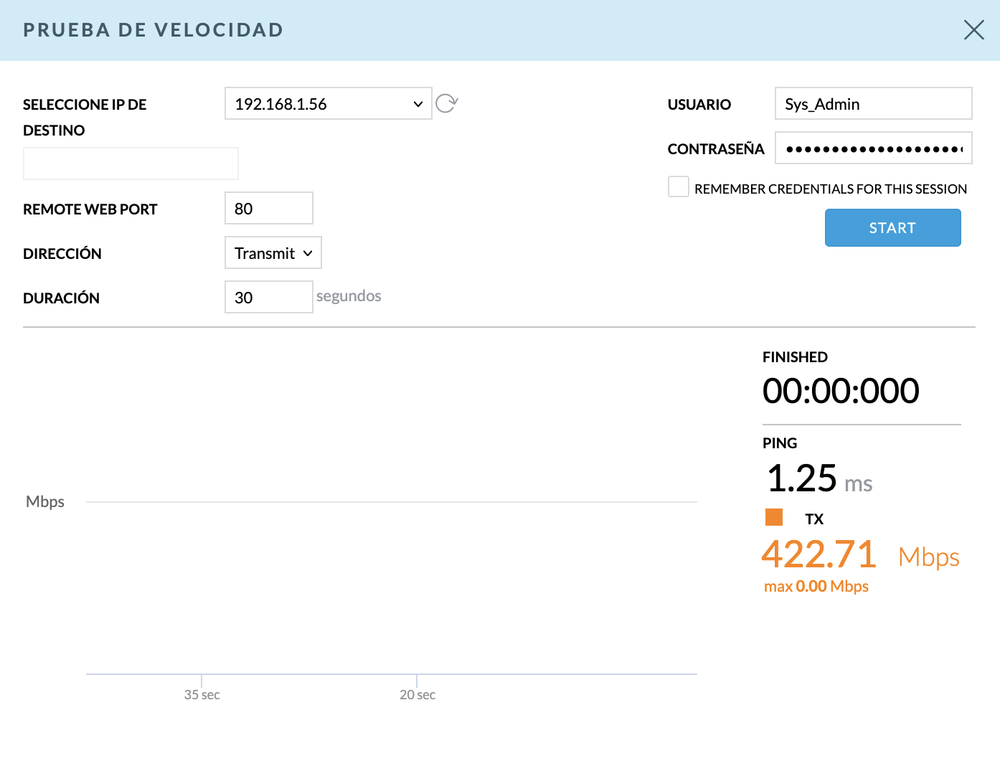
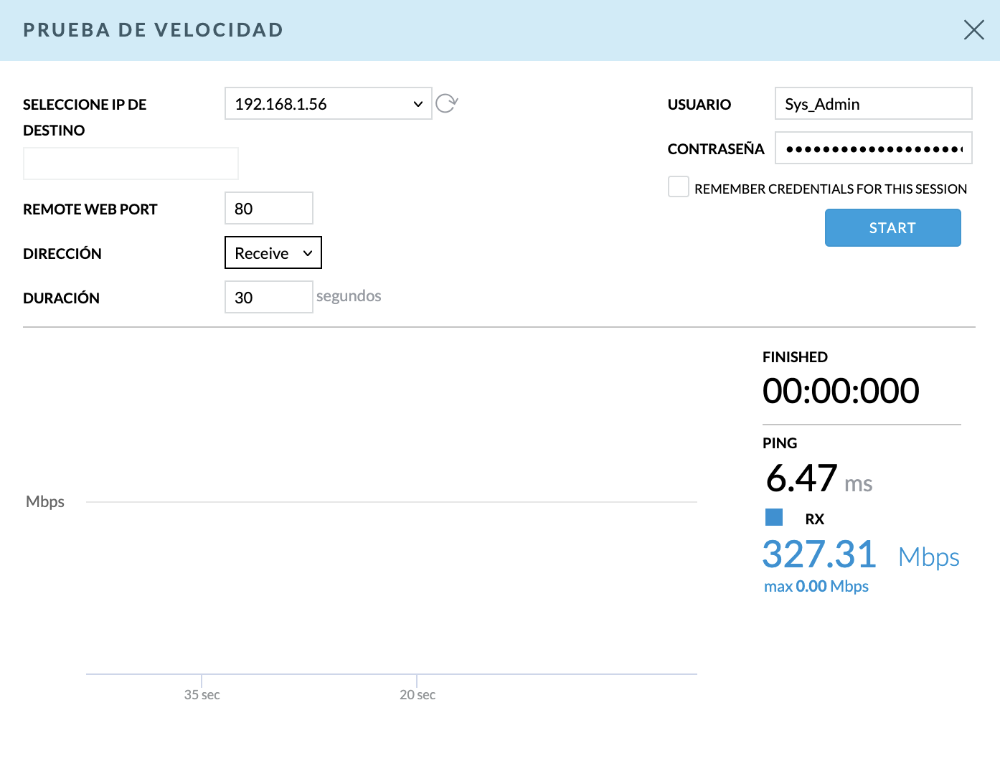

Point-to-Point Wireless Backhaul for Rural Broadband
2020–2021 • Wireless Links, Routing, Rural Connectivity, Ubiquiti airMAX

Summary
This project documents the design and deployment of a point-to-point wireless backhaul network built after the primary home connectivity was found to be inadequate for daily use during the COVID-19 pandemic.
The initial objective was to replace an unstable ADSL connection at my own home with a fibre-based link from a nearby location with available coverage. After validating the design in real operation, the same architecture was extended to two additional point-to-point links serving other nearby locations with similar infrastructure limitations.
The system is based on Ubiquiti airMAX ac radios and integrates RF planning, physical installation and IP-layer design. Routing, traffic separation and upstream access are handled by a Ubiquiti EdgeRouter X at the fibre-connected site.
Motivation
When all academic activity moved online during the COVID-19 pandemic, connectivity limitations at my home became immediately critical. The existing ADSL line offered insufficient upstream capacity, high latency and frequent instability, making real-time communication unreliable for online classes and collaborative work.
Once fibre connectivity was located at a nearby site, the engineering objective became the design of a wireless backhaul link capable of delivering stable, fibre-grade performance to a home that did not itself have fibre availability.
After the first deployment proved reliable in daily operation, the same backbone design was extended to serve other nearby locations experiencing similar access constraints.
Requirements
Technical Requirements
- Throughput: enough to support multiple simultaneous video calls, cloud document editing and general web access.
- Latency and jitter: significantly better than the ADSL link, suitable for real-time audio and video.
- Reliability: stable operation over time and resilience to typical weather conditions.
- Integration: clean Layer-2/Layer-3 integration with existing home routers, without requiring complex configuration on client devices.
- Extensibility: ability to add additional links using the same overall architecture.
Operational Requirements
- Use of cost-effective hardware without compromising stability.
- Remote management and monitoring of radios and routing equipment.
- Operation within legal spectrum and EIRP limits.
- Non-intrusive installation on existing structures (rooftops, masts).
Design
Topology & Network Architecture
The architecture is built around a single fibre-connected site acting as the upstream gateway. From this location, a point-to-point wireless link was first deployed to provide reliable connectivity to my own home, which suffered from persistent ADSL limitations. Following the success of this initial deployment, two additional point-to-point links were later installed to extend connectivity to two nearby family properties facing similar constraints. Each link operates as a Layer-2 bridge, allowing the remote networks to integrate seamlessly with the central router while remaining logically independent.
A Ubiquiti EdgeRouter X is deployed at the fibre-connected site to:
- Terminate the fibre connection.
- Perform routing and NAT.
- Provide network separation between sites.
- Apply basic firewalling and traffic prioritisation.
Each remote site maintains its own local router behind the wireless bridge, preserving autonomy while relying on the headend for upstream routing and policy enforcement.
Radio Technology
The backhaul is implemented with Ubiquiti airMAX ac radios, selected for:
- Directional point-to-point performance with good link budgets.
- Stable modulation under varying environmental conditions.
- Mature management tools and a strong price/performance ratio.
All links were designed with clear line-of-sight as a prerequisite, with antennas mounted high enough on rooftops or masts to minimise Fresnel zone obstruction within the constraints of each site.
Link Planning
Prior to deployment, basic RF and path planning was performed:
- Approximate distances and elevation profiles were used to verify feasibility and line-of-sight.
- Channel and channel-width settings were chosen conservatively to prioritise stability over peak rate.
- Frequency planning considered coexistence between links to reduce self-interference.
Implementation
Installation Gallery


The implementation started with a single point-to-point link between the fibre-connected site and the primary home. A pair of airMAX ac radios were installed, aligned and configured in bridge mode, with the EdgeRouter X handling routing, NAT and basic QoS.
Once the first link had proven stable in daily use, the same pattern was replicated for two additional homes, each with its own dedicated point-to-point link back to the same upstream site. Frequency and power settings were adjusted to avoid interference between links and to maintain clean, stable signals.
Over time, link quality and utilisation were monitored using the Ubiquiti management interface, making it possible to fine-tune parameters such as channel width, transmit power and modulation policies based on actual performance rather than theoretical values.
Results




The wireless backhaul successfully replaced the original ADSL connection as the primary access method at the affected locations:
- Latency and jitter were reduced to levels comparable to wired broadband (6-7ms).
- Available throughput increased significantly (~400Mbps), enabling stable video conferencing.
- Cloud-based tools, software updates and streaming became usable without saturating the link.
The modular architecture made it possible to expand from a single link to multiple sites without a full redesign. The system has remained in continuous operation, requiring only minor adjustments and occasional alignment checks.
What I Learned
- End-to-end connectivity is shaped as much by RF conditions and installation details as by IP configuration.
- Designing for stability often means trading theoretical peak throughput for predictable, reproducible performance.
- A central routing point simplifies management but requires careful consideration of its impact on overall availability.
- Integrating the backhaul with enterprise-grade routers highlighted the value of making infrastructure effectively transparent for end users.
- This project provided first-hand experience in designing and operating a system that people depend on every day, rather than a purely experimental lab setup.